HD-2D Scene
Introduction
For the final project of my creative code course I created a small forest scene in an HD-2D style (2D images within a 3D space with heavy use of shaders). This style had always piqued my interest, but I was always too intimidated to attempt it myself as I was unfamiliar working with 3D.
Throughout my creative code course, I was pushed to try new coding styles and technologies. As such, I decided my final project would be the perfect time to finally attempt this style.
Setting Up 3D
The first step of this project was to set up a 3D world. For this project I was using GameMaker, an engine primarily used for 2D while still providing functionality for 3D. For this part of the project I had to give myself a crash course on how 3D objects are generated onto a screen.
The time spent practicing with more low level graphics topics was valuable in growing my coding skills. By understanding the basics, I was able to easily import 3D objects later on in the project.
The terrain consisted of simple 3D cubes with diagonal edges. I coded these by hand to gain familiarity with how 3D vertexes work. Furthermore, all cubes have only 4 of their 6 faces. As the camera is always looking forward, the back and bottom of the cubes are never seen. Discarding these faces adds a bit of optimization when the code is running.
All objects in this world are considered 3D objects. Even the "2D" sprites. Each sprite is a texture I draw onto a vertical standing wall. This method is used for the player and all trees, bushes, and flowers.
Initially I had some difficulty directly displaying the transparency of sprites. I was able to fix all issues by discarding any transparent pixels via a shader.
Lighting and Shadows
The hardest aspect of this project was setting up lighting and shadows. I watched many video tutorials and experienced loads of trial and error until I got lighting and shadows properly working. I'm still not a pro but I'll do my best to describe the method used.
I set up a camera where the sun would be located. The direction the camera is pointing represents the direction the sun/ light is shining. I then created a surface that draws the scene from this camera's perspective. I placed the surface into a shader that calculates the distance between the camera and each object, creating a depth map. A surface in GameMaker is essentially a screenshot storing everything drawn on screen.
Once the depth is calculated I drew everything on another surface. This time from the perspective of the final scene. I passed both the depth map and the new surface into a shader to calculate shadow locations. I then decreased the rgb value for every pixel considered a shadow.
I revisited shadows near the end of the project as I noticed they were all rectangles. Recall how each 2D sprite was a texture on a vertical, rectangular wall. This was the culprit. I edited my shader that creates the depth map so it discards information wherever a pixel was transparent. This made all shadows their proper shapes.
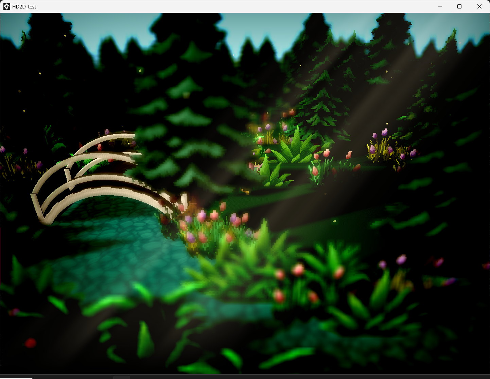
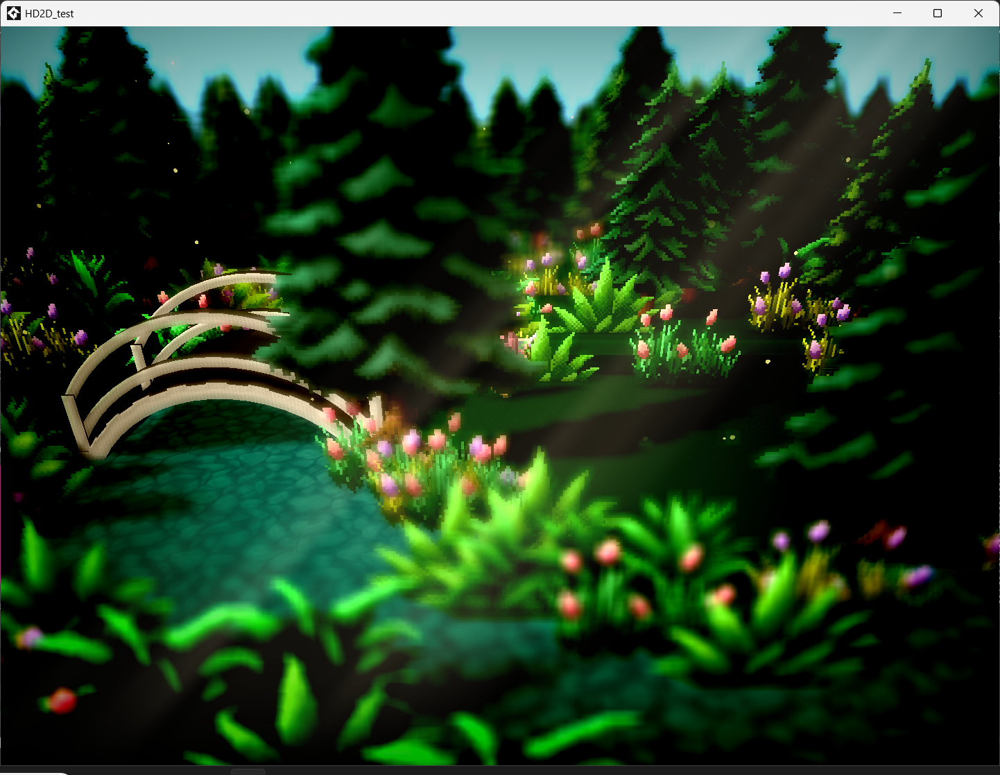
Post-Processing Effects
The remaining time of this project was spent adding various post-processing effects. I watched a video that outlined all the different effects one needed for the HD-2D style and used it as a checklist for what effects to include.
This step was easier to implement than the previous two as my code was designed in a way that could easily introduce new shaders. Most effects are in a single fragment shader. However some effects needed further shaders to achieve their desired outcome, such as bloom and depth of field. Each shader was either something I coded myself, found online, or made for a previous creative code class assignment.
The amount of pop all of these effects added greatly enhances the entire scene despite many of them being only a few lines of code. I feel contrast is a good example. It is a single line of code but hugely enhances the visuals of the scene.
The water used throughout the scene is a flat plane with a repeating texture. The movement comes from a shader trick that utilizes random noise to distort this texture.
The last thing I added was a very simple particle effect. They are made like any other 2D sprite in this scene. I generate a small dot sprite with random size, speed, and direction.
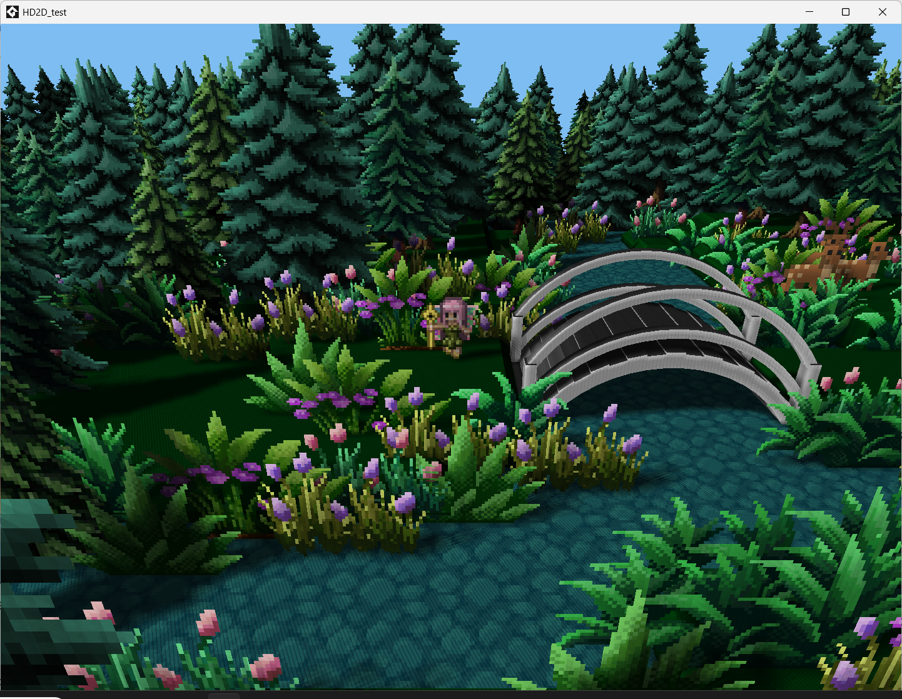
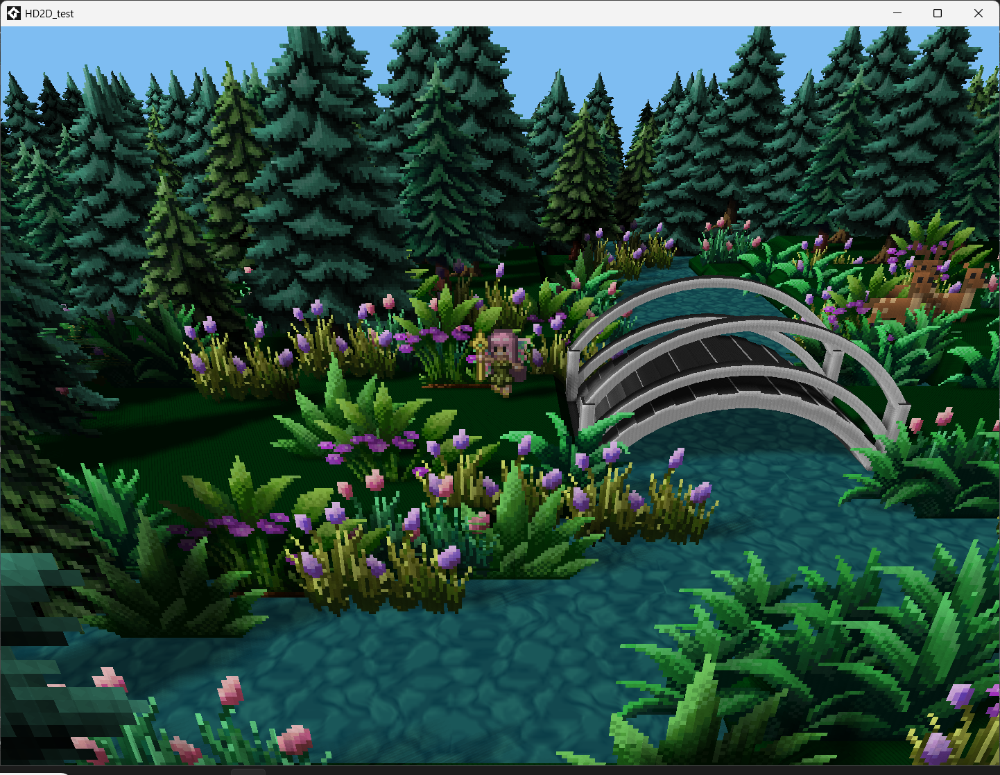
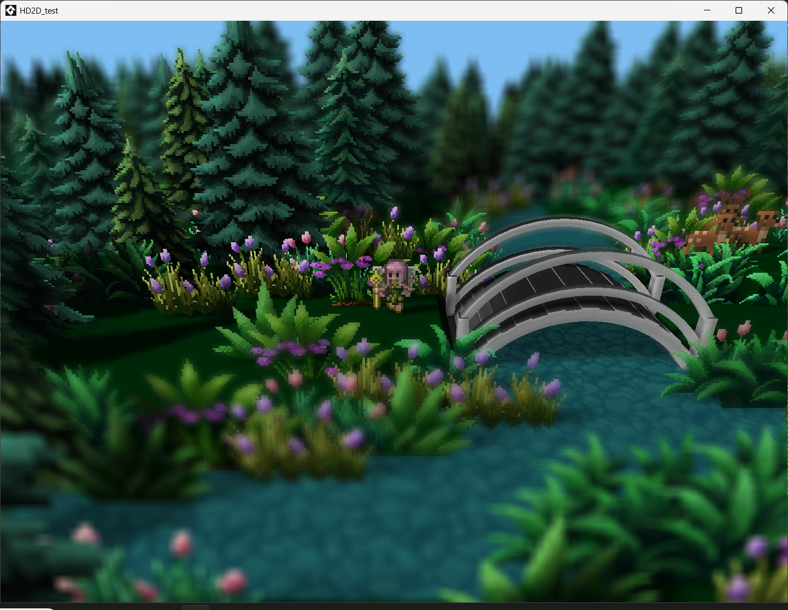
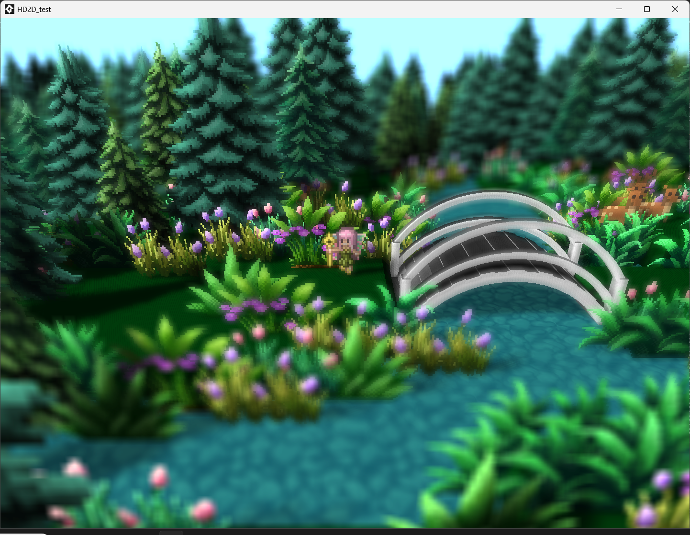
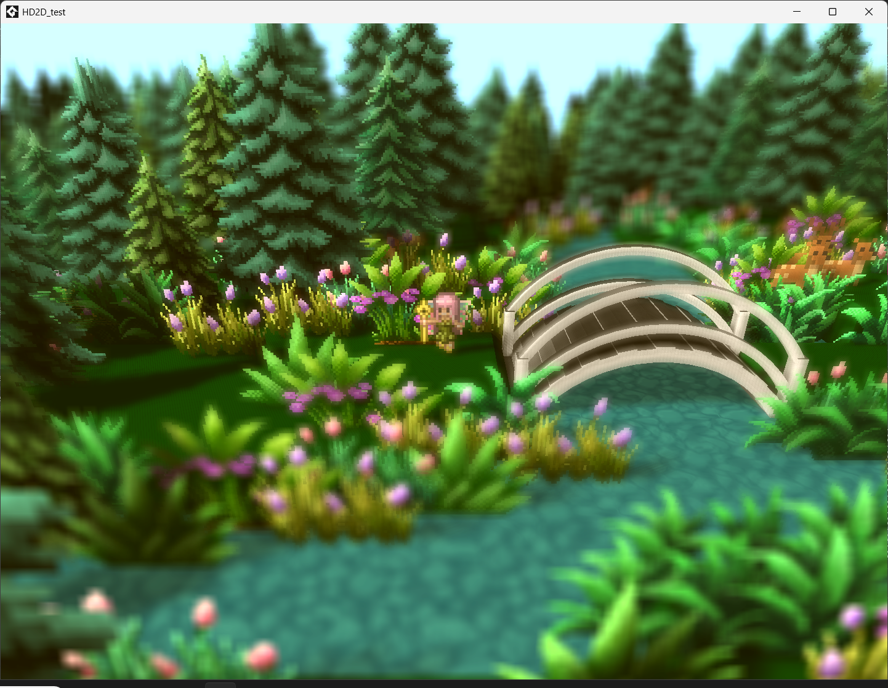
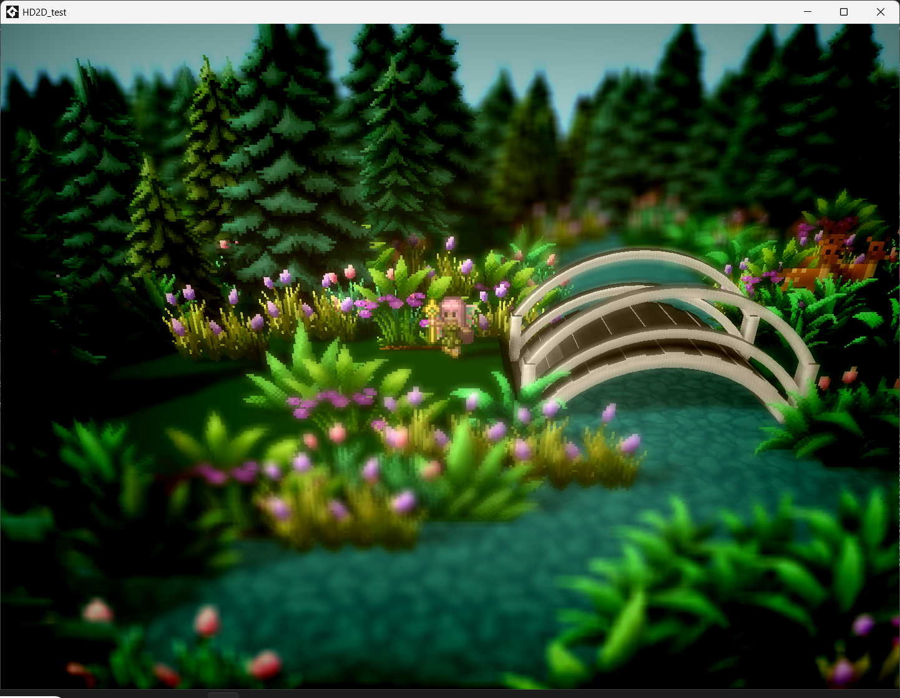
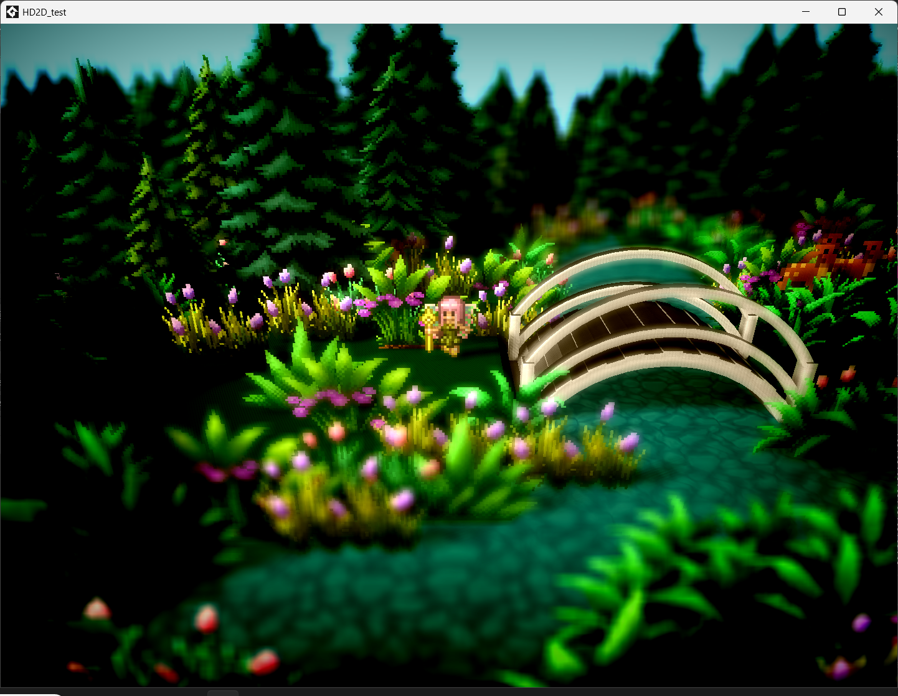
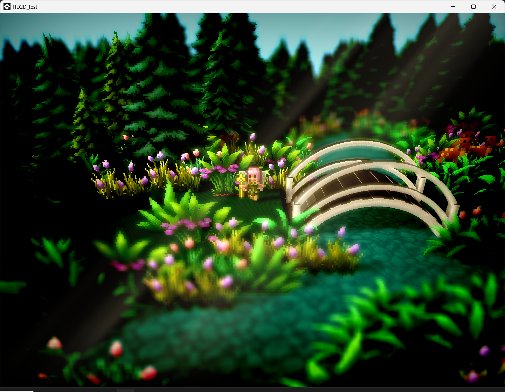
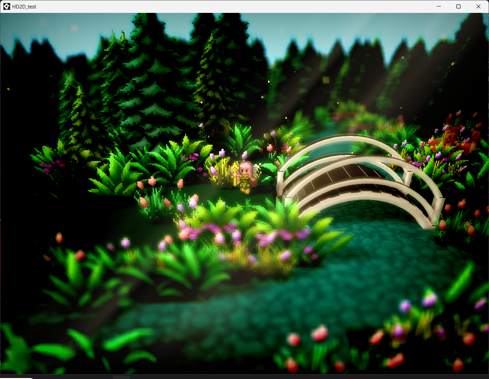
Full List of Effects
- Moving Water
- Depth of Field
- Bloom
- Color Grading
- Vignette
- High Contrast
- Light Rays
- Particles
Conclusion
I'm proud of how this project turned out and impressed that it's something I made. I wanted to try this technique months back but within a few minutes got intimidated and abandoned the idea. I develop games as a hobby, and often stick to what I am familiar with. The structure of this class allowed me to experiment with and practice many new techniques I would have never dared try. In turn making me a stronger programmer and gave me the confidence to use unconventional tools and techniques.
I am hope to utilize this pipeline I made in future projects. During development, I put a lot of effort into making sure my code was clean, readable, and scalable so that I can use it beyond just this scene.